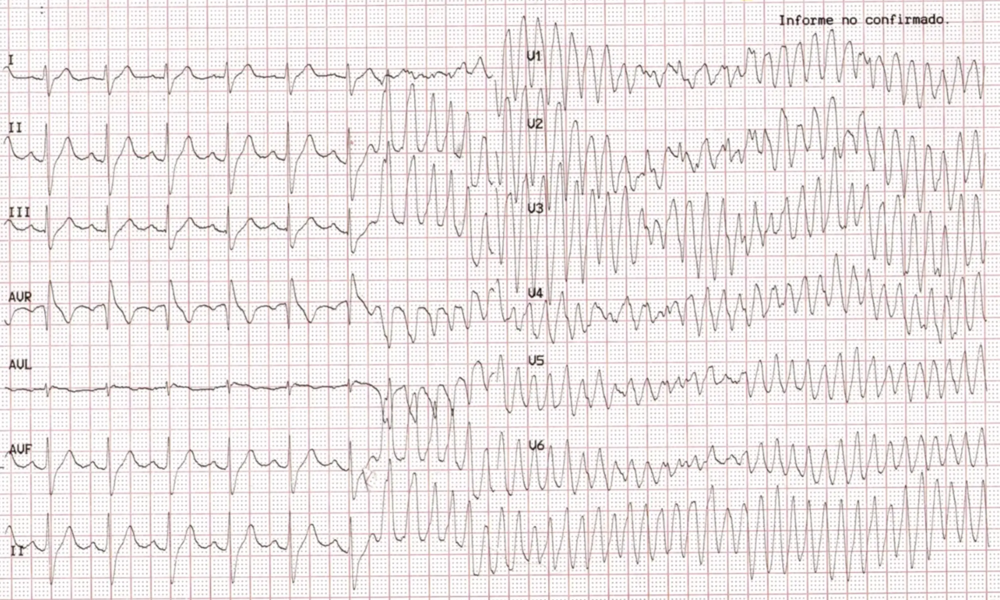

Plötzlicher Herztod oder doch nur eine Synkope?
In Santiago, Chile wurde der Rettungsdienst zu einem 22jährigen Mann gerufen, der einmalig synkopiert ist.
Nach dem Ereignis präsentierte sich der Patient vollkommen beschwerdefrei, Vitalwerte waren alle in der Norm,
keine bekannten Vorerkrankungen und keine weiteren Auffälligkeiten.
Einsätze dieser Art gehören zum rettungsdienstlichen Alltag, aber auch diese harmlos wirkenden Situationen
können gravierende Ursachen haben.
In der Universitätsklinik Pontificia Universidad Católica de Chile angekommen, war der Patient immernoch
asymptomatisch und beschwerdefrei. Während das EKG aufgezeichnet wurde, wurde der Patient bewusstlos und pulslos mit
folgendem Ergebnis:

Nach erfolgreicher Defibrillation, kam der Patient wieder mit einem Spontankreislauf zu Bewusstsein. Paar Tage und eine ICD-Implantation später konnte der Patient guten Gewissens aus dem Krankenhaus entlassen werden.
Pathophysiologische Besonderheit
Die häufigste Ursache des Plötzlichen Herztodes ist eine maligne Tachyarrhythmie.
Ventrikuläres Flimmern/Flattern oder eine Ventrikuläre Tachykardie
Mit besonders viel Glück kann es passieren, dass die Arrythmie sich selber terminiert und wieder in einen Sinusrhythmus
umspringt. Dieser Verlauf wirkt von außen wie eine Synkope, jedoch hat der Patient nicht nur kurz das Bewusstsein verloren,
sondern wurde reanimationspflichtig.
Der einzige Hinweis, um diese beiden Situation auseinander zu halten, versteckt sich im EKG: Aus diesem Grund ist bei
der Synkopenabklärung eine ausführliche EKG-Interpretation obligat!
Eine vollständige Interpretation ist nur mit dem 12-Kanal-EKG möglich
Aufbau des Vortrags
- Dieser Vortrag dient dazu gefährliche EKG-Zeichen bei synkopierten Patienten zu erkennen, um für Situationen wie im oben beschriebenen Fall vorbereitet zu sein Ein präklinisches EKG, hätte bereits Aufschluss über die Ursache der Synkope liefern können, wodurch Aufregung und Stress bei der plötzlichen polymorphen VT hätten minimiert werden können
- Jedes Zeichen wird mit einem realen Fall eingeleitet; das beigefügte EKG kann auf mögliche Besonderheiten analysiert werden; schließlich erfolgt eine Auflösung mit einer kurzen pathophysiologischen Erklärung Betonung liegt auf kurz: Jede einzelne Ursache hätte genug Material für einen eigenen umfangreichen Vortrag
- Es gibt insgesamt 8 EKG-Zeichen, unterteilt in 3 Kategorien Links in der Seitenleiste findet sich eine Schnellübersicht, um direkt zum gewünschten Fall/Kapitel zu kommen
- Durch das Klicken auf das EKG, kann mit Zoomen und Bewegen jeder Streifen ausführlich analysiert werden CAVE: Diese klinischen EKGs haben eine Laufrate von 25mm/s
- Sämtliche Fälle und EKGs wurden von der Lernplattform ECG WEEKLY entnommen